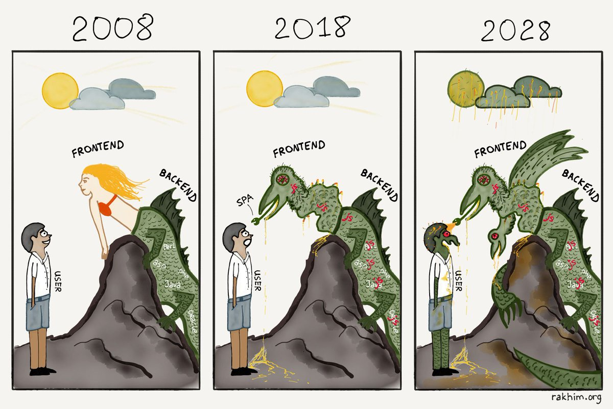

История профессии фронтенд-разработчика
В 80х годах, после открытия доступа к интернету всему миру, один из родоначальников “глобальной паутины” - Тим Бернерс-Ли занимался вопросами инструментов для этой самой паутины. В результате в 1991 году он предложил первый вариант языка HTML. Это изобретение нельзя было выпускать из виду. И в то время молодая технологичная компания, известная как Netscape Communications, адаптировала эту технологию в своем браузере - Netscape Navigator (далее просто Netscape). Это было прорывом. Netscape распространялся бесплатно для личного использования и была платная лиценция для коммерческого. Netscape был широко распространен, но как говорится, где есть деньги там появляется Microsoft. В этом же году появляется первая версия IE, которая, конечно же, была жалкой пародией на Netscape. Но данный год принято считать началом первой браузерной войны. Что имеется в виду? В погоне за аудиторией Netscape и IE безконтрольно добавляли новые фичи и теги, которые, конечно, не поддерживались друг другом. Доходило до такого абсурда, что дизайнеры, которые делали сайты для этих браузеров оставляли подсказки "лучше просматривать в netscape" или "Лучше просматривать в IE". В этих браузерах даже были разные версии предков современного Javascript. В общем, старый добрый мир веб-разработки. Но все закончилось ближе к 2001 году. Поскольку Netscape была маленькой компанией, а Microsoft к тому времени уже гигант с диверсифицированным бизнесом. IE быстро вытеснил конкурента с рынка, потому что IE был бесплатен и шел в комплекте с windows. В 2001 году вышел IE6, который был лучшим браузером на рынке. И до 2006 года IE остановился в развитии. При отсутствии конкурентов за это время вышло только одно обновление. За аналогичный период до, как вы можете догадаться, вышло 6 версий.